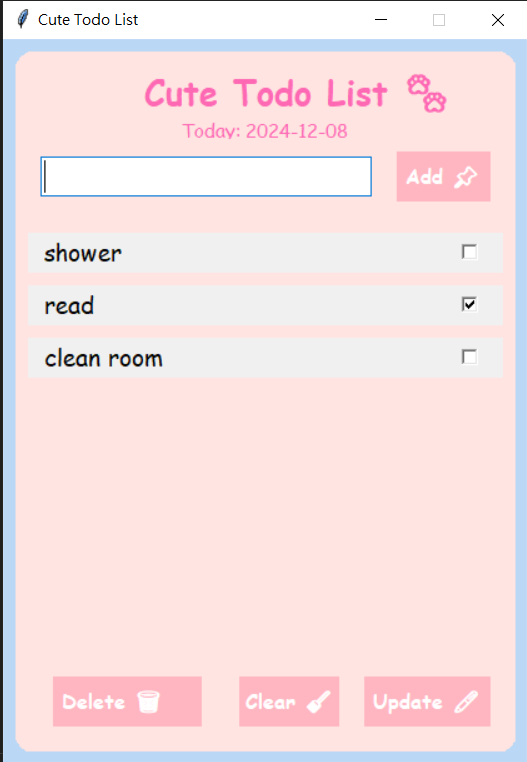
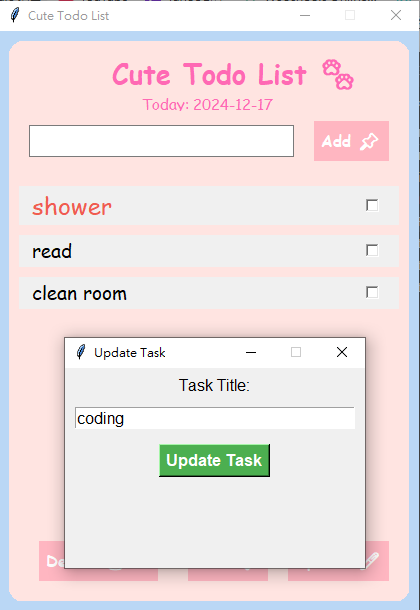
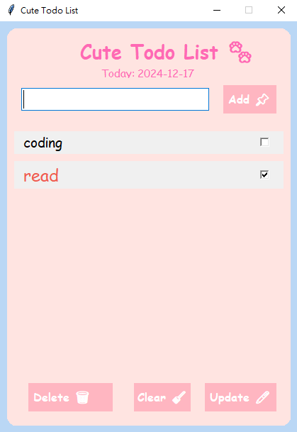

Todo List App
這是一個使用Python的Flask框架與Tkinter製作的Todo List應用，專為桌面環境設計，
該應用展示了如何使用Flask建立 API 並與SQLite交互
實現Todo項目的增、刪、改、查（CRUD）操作。前端使用Tkinter創建簡單的小視窗界面，提供用戶友好的交互體驗。
主要特點
Flask API：用於處理 Todo List 的所有後端邏輯，包括 CRUD 操作。
SQLite3 數據庫：用於存儲 Todo 項目，確保應用的持久化數據。
Tkinter 前端：提供簡單的桌面視窗界面，讓用戶可以添加、查看、更新和刪除待辦事項。

基本的介面 新增事項和打勾等功能

點選後更新要更改的項目

點選要刪除的項目或清空全部的項目